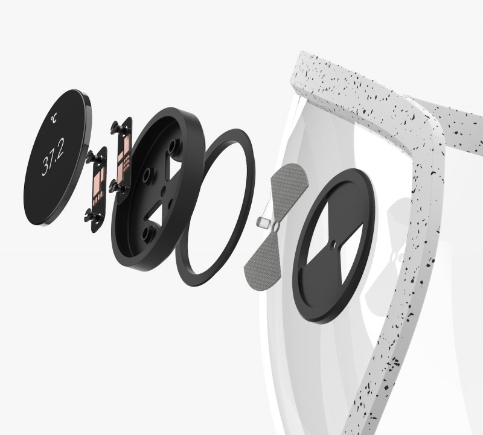
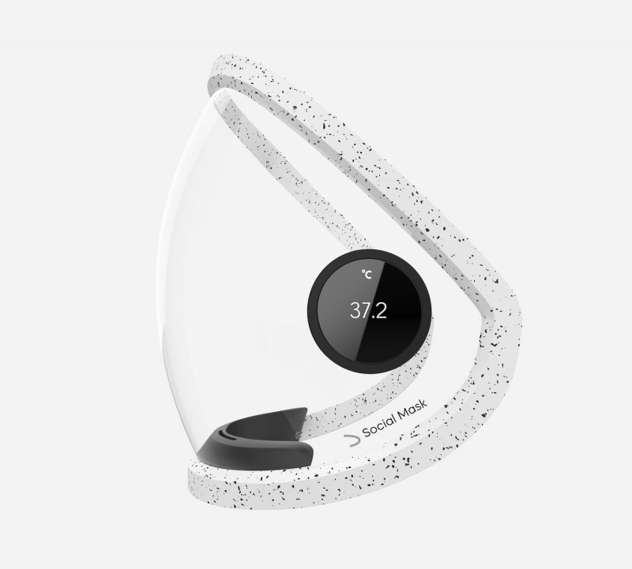
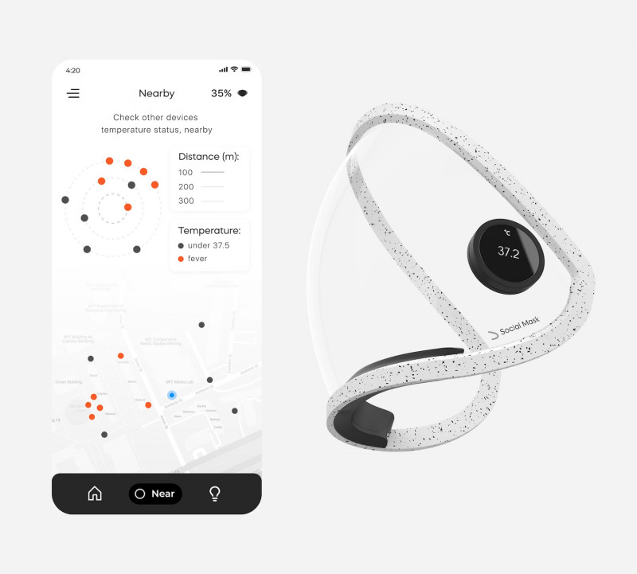

Executant


Client
(foto) Un român a inventat o mască de protecție
inteligentă, care se conectează la telefon
Masca, botezată Social Mask, se conectează la o aplicație din telefonul mobil pentru a verifica proximitatea purtătorului față de alți utilizatori și să determine posibilitatea unei infecții virale, se arată în prezentarea produsului. Cu un aspect modern, masca este realizată din policarbonat sau polipropilenă, pentru a nu provoca alergii. Dispozitivul a fost creat de românul Ciprian Burzo, scrie digi24.ro.„Ar trebui să știm cine este infectat în zonă și să primim informații



Executant

Client